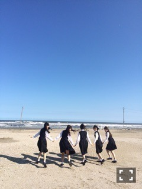

| 2015/10 30 Fri | ひめたん-0o0-その584 |
13thシングル
「今、 話したい誰かがいる」
発売になりました！

今回のシングルもたくさんの方に
愛されますように。
アンダー曲「嫉妬の権利」
ユニット曲「大人への近道」
個人PV「RED BUTTON」
よろしくお願いします～＊
全握で披露するのが楽しみです。
みなさんは今回のシングルで
どの曲が好きですか？
月曜日はおに魂に
愛未とゲスト出演してきました～
おににゃんさん、ゆったん
お世話になりました( ˇωˇ )
初めてお邪魔したのに
初めてお邪魔した感のない
アットホームな現場でした。
おににゃんさんいわく私も愛未も
この番組に「ぴとっ」感があると。笑
普段からおたよりやブログや
ゆったんのお話の中に
登場してるからだろうなきっと♡
生放送の中で正式に
おに魂リスナー兼ファミリーの称号を
いただきました！
これからも聞くぞ～
そしてまた遊びに行くぞ～
それから、
アーティストコーナーの時間に
登場している花岡なつみちゃん
同じスクール出身のお友達なの(´,,•ω•,,｀)
2年ぶりに再会しましたー！

お仕事現場で
元スクール生に会うのは
新鮮だし不思議だし本当に嬉しいこと。
なっちゃんの方が出番早かったので
生放送中ずっとマネージャーさんと一緒に
ブースをガン見してました♡
今度はプライベートで
ゆっくりお話しようね。
水曜日は生ドルにサンクエトワールで
出演してきました～
かなりん、さゆりんありがとう♡
私は生ドルのいつものスタジオに
お邪魔するのは初めてだったのですが
アクティブな番組ですね(´｡•ω•｡`)
いろんなゲームして気がつけば
70分も出演していました
楽しんでいただけましたかー？
また5人で遊びに行きたいです！
ありがとうございました。

かなりん♡
次回のらじらー！サンデーは
乃木坂46から高山一実ちゃん、
能條愛未ちゃんが来てくれます。
前にかずみんが来てくれた時
めちゃめちゃ笑ったな～
アメイジング対決やります＼(^o^)／
ジョンソンよく名前が挙がるので
やっとスタジオにお迎えできるのが
嬉しいです＼(^o^)／
13thシングルやアンダーライブの感想
聞かせてください
2人へのメッセージも待ってます！
宛先はこちら。

＊お知らせ＊
10/29 週刊ヤングジャンプ
サンクエトワールの5人で
載ってます。まいやん表紙が目印。
先日のミラクルジャンプとは別カット。
こちらは制服がメインです
海行ったよ！気持ちよかった！
春にはアンダー特集して頂けたり
今回もサンエトいっぱい載せてもらえて
本当にありがたい（ ; ; ）
10/31 ブブカ12月号
「姫とひめの関係」というタイトルで
いくちゃんと対談しました
いつか2人でやってみたかったんだ～！
タイプの違う2人だから
なんで仲良くなったのか不思議って
よく言われるから
このページでその謎が
少しでも解けたら嬉しいな。
11/1 乃木坂工事中
この日は本編の最後に
サンクエトワール「大人への近道」の
スタジオライブが流れます。
ダンスはMV以外だと
ここで初披露かな？
それぞれのソロパートに是非
注目してもらいたいと思います♡
11/6～ ソニレコ！暇つぶしTV
新生ソニレコTVが
いよいよ配信スタートになります！
配信は毎週金曜日です。
Kちゃん、じょ～ん、おひめちゃんと
3人で素敵な番組を作っていけたらなと
思っております♪
チャンネル登録よろしくね。
11/14 EX大衆
ソロインタビューでございます
ありがたき！！
今までのアンダーライブを
私からみた目線で振り返ってみました
4thのお話もたっぷりと。
武道館もありますもんね
皆さんもこれを読みながら一緒に
アンダーライブの歴史に浸ってみて下さい
他にも色んなお仕事させていただいたので
早く告知したい！！
こんなにお知らせできるなんて
幸せです(´｡•ω•｡`)
11月も楽しみにしていてください♡

乃木坂46SHOWの時の写真。
「嫉妬の権利」歌う時は自然と
顔がキリッとなります
運営ブログにアンダーライブレポが
上がったので良かったら見てみてください
写真も盛りだくさんでしたよ～
(＊´・ω・＊)
コメント(685)
2015/10/30 23:24